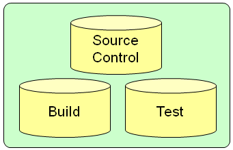

Source Control, Build, Test
I believe that the three fundamental practices of Software Engineering are: source control, build and test.

To be more specific these practices mean:
- Source Control. All artifacts required to build and deploy the software are in source control and developers are committing to the repository frequently (> 1 per day). This is straight forward, provided that an adequate tool is chosen and a simple branching strategy is adopted. The branching strategy maintains a "trunk" where main development occurs, and branches when a release is made. Maintainence of the release occurs in the branch.
- Build. The build requires single action to execute, is run after each source control check-in and takes less than 10 minutes to execute. This is straight forward to achieve but requires discipline and constant minor maintenance. A continuous integration tool should be used to run the build.
- Test. A comprehensive set of automated unit and automated acceptance tests are in place, which are run automatically as part of the build. In practice this means adopting Test Driven Development [Beck] to develop unit tests. For automated acceptance testing no general method has yet been developed.
I have worked on a number of projects which adopted these practices to a greater or lesser extent. My experience is that the greater the adoption of these practices the "less painful" the project has been to work on. None of the projects I have worked on has fully implemented all three practices. Most often we have failed to fully implement automated testing.
This is because automated testing is difficult.